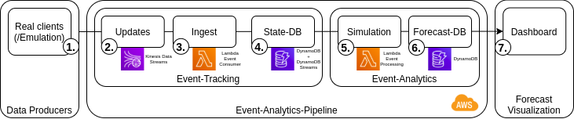

Introduction to AWS for Online Discrete-Event Simulation
Wladimir Hofmann, Sebastian Lang, Paul Reichardt, Tobias Reggelin
Otto-von-Guericke-University Magdeburg, Germany
- Motivation / Scenario
- Concept
- Implementation / Demo
Motivation
- "Digital Twin": simulation model + real-time information = operational insight
- PhD thesis Donhauser (Erlangen, 2020): simulation-based order scheduling in masonry plants, based on current system state and order data
- Siemens Plant Simulation: OPC-UA + ODBC, MS Access DB, manually started simulation runs via management C# application
How can a scalable digital twin setup look like, built on open-source software & managed cloud solutions ?
Scenario
- simple build-to-order production process:

Goal: forecast schedule deviations caused by material delivery delays
Concept
Reference-pipeline for digital twin applications:

Implementation
- AWS cloud services for managed compute/storage
- Python-based DES with SimPy / Casymda
- Infrastructure-as-Code via Terraform
- Docker + Localstack for local development
- > public github repository
Demo
# docker + terraform required
docker-compose up localstack # start local "AWS"
# prepare lambdas:
docker-compose up package-ingest-lambda
docker-compose up package-simulation-lambda
# setup resources on "AWS":
cd terraform && terraform init
terraform apply && cd ../
# run dashboard (http://localhost:8050)
# & execute emulation (http://localhost:5001):
docker-compose up dashboard emulation
Screencast
Conclusion / Outlook
- pipeline model for cloud-based digital twin applications
- open-source digital twin implementation for operational forecasts
- simple example: more complex use-case should be implemented
- security aspects should be incorporated
- AWS-based: other vendors should be evaluated
Thank you for your attention.
github-repo - blog-post
slides by reveal.js